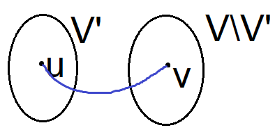

Графы#
Алгоритм Прима#
# \(G = (V, E)\) - исходный граф
\(\sqsupset \, u_0 \in V\) - произвольная вершина
\(V' \leftarrow \{u_0\}; \;\; E' \leftarrow \varnothing\)
for \(k \leftarrow 1..|V|-1\):
# Найти не присоединенную (ещё) вершину,
# ближе всего лежащую к одной из присоединенных
\((u_k, v_k) = \mathrm{argmin}\, \{ d(u, v) \colon (u, v) \in (V' \times (V \setminus V')) \cap E \}\)
# Присоединить вершину \(v_k\) к ближайшей присоединенной
\(V' \leftarrow V' \cup \{v_k\}\)
\(E' \leftarrow E' \cup \{(u_k, v_k)\}\)
# \((V', E')\) - минимальное остовное дерево графа \(G\)
Доказательство корректности алгоритма#
Проведем доказательство по индукции. Докажем следующее утверждение.
На любом \(k\)-м шаге алгоритма (\(k = 0..|V|-1\)) построенное дерево \(G' = (V', E')\) содержится (является подграфом) в некотором минимальном остовном дереве графа \(G\).
База индукции. При \(k = 0\) граф \(G' = (V', E')\), где \(V' = \{u_0\}\), \(E' = \varnothing\), очевидно, является подграфом любого остовного дерева графа \(G\).
Гипотеза индукции. Предположим, что наше утверждение истинно на \((k-1)\)-м шаге алгоритма (\(k \in 1..|V|-1\)).
Шаг индукции. Докажем тогда, что утверждение истинно на \(k\)-м шаге.
Пусть \(T\) - любое минимальное остовное дерево графа \(G\), содержащее в качестве подграфа граф \(G'\), построенный на \((k-1)\)-м шаге алгоритма. Существует хотя бы одно такое дерево \(T\) (по гипотезе индукции).
Разберем два случая:
\((u_k, v_k)\) принадлежит \(T\).
В этом случае утверждение на \(k\)-м шаге истинно. Доказывать нечего.
\((u_k, v_k)\) не принадлежит \(T\).
Напомним, что ребро \((u_k, v_k)\) выбиралось так, что \(d(u_k, v_k) = \min\{d(u, v) \colon (u, v) \in E, \; u \in V', \; V \in V \setminus V'\}\).
Разобьем дерево \(T\) на три подграфа - два поддерева и соединяющее их ребро:
\(T_1 = (V_1, E_1), \quad V_1 = V'\) ;
\(T_2 = (V_2, E_2), \quad V_2 = V \setminus V'\) ;
\(T_3 = (V_3, E_3), \quad V_3 = \{u, v\}\) .
Здесь \((u, v) \neq (u_k, v_k)\), поскольку ребро \((u_k, v_k)\) не принадлежит \(T\).

Заменим ребро \((u, v)\), соединяющее подграфы \(T_1\) и \(T_2\), на ребро \((u_k, v_k)\) - получим новое остовное дерево \(T'\). Докажем его минимальность. В самом деле, в результате замены ребра \((u, v)\) на ребро \((u_k, v_k)\) стоимость остовного дерева не увеличится. Следовательно, стоимость дерева \(T'\) минимальна.
Значит, в графе \(G\) существует минимальное остовное дерево \(T'\), содержащее подграф \(G'\), построенный на \((k-1)\)-м шаге, и ребро \((u_k, v_k)\). А это и есть подграф \(G'\), построенный на \(k\)-м шаге.
Из доказанного утверждения вытекает, что после выполнения всех шагов алгоритма будет построено минимальное остовное дерево графа \(G\). Корректность алгоритма доказана.